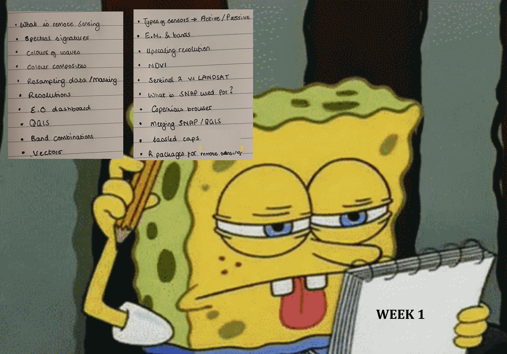
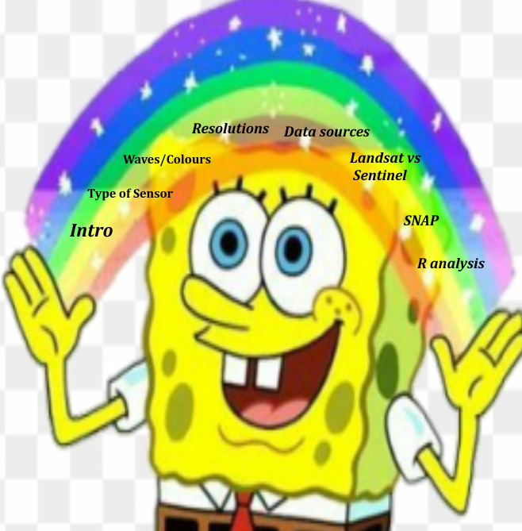
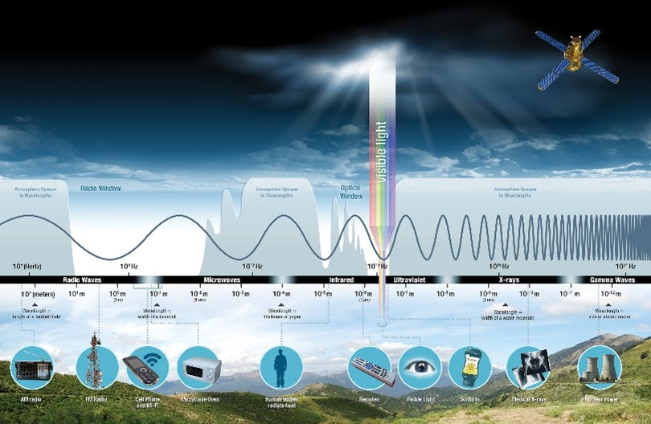
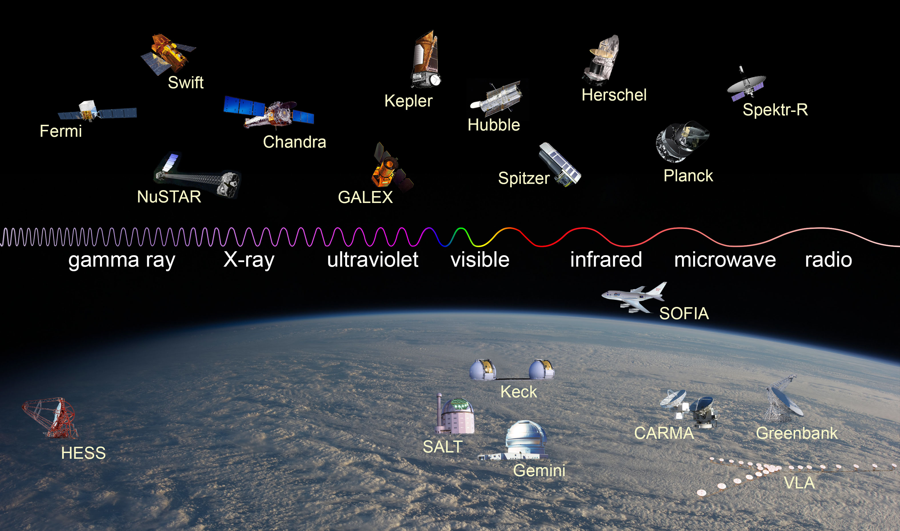
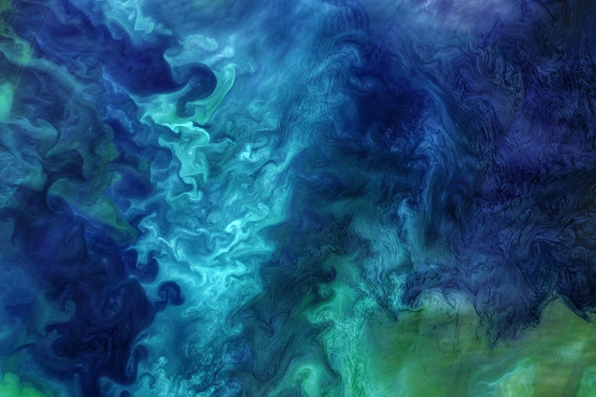
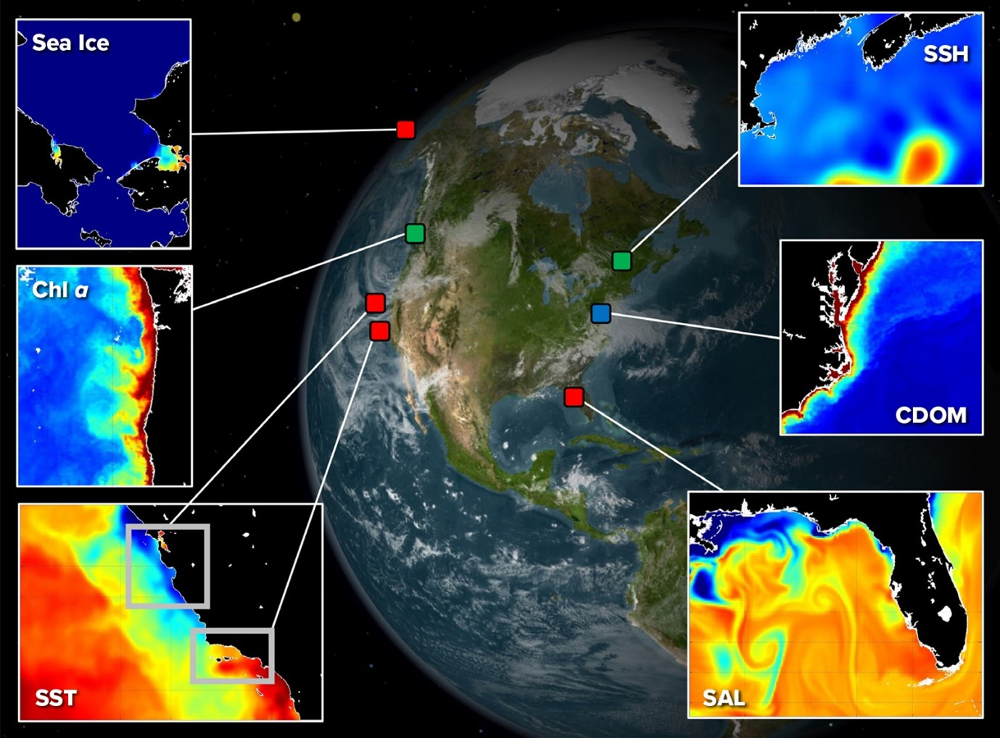
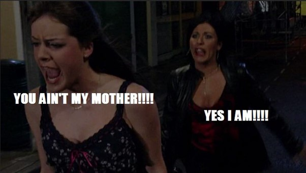
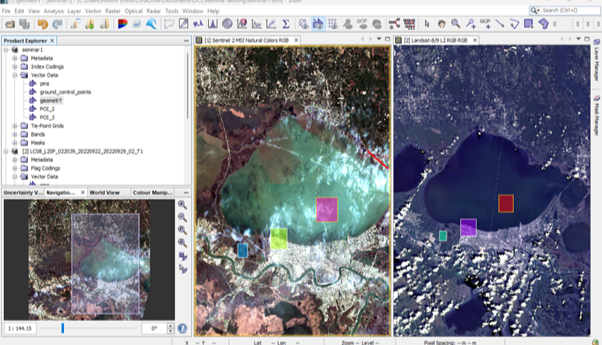
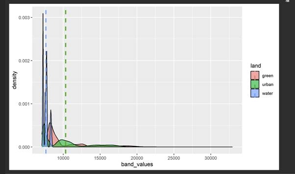
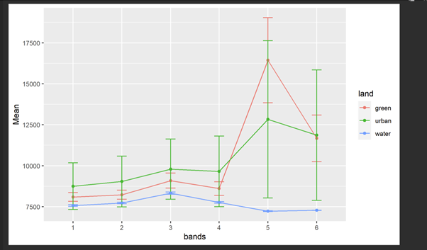

The the first entry into my diary start of a new semester! In the none remote sensing centered part of my life i’ve made a new year’s resolution to practice more Spanish, primarily watching spongebob en Espanol, but let’s see how that resolution goes…
As well as this, it seemed that the stars had aligned and every show, piece of music or even media that I saw was about New Orleans. I walked into the seminar on Thursday listening to the song Yellow moon by New Orleans jazz band the Neville brothers. So of course, in this entry I wanted to use what I learnt about remote sensing to explore Louisianna!
I came out of this week with an overwhelming fear of how to make a concise entry that holds all of the points shown by Spongebob in S01E02 (not edited at all).

And then a path was formed! (Shown by Spongebob in S03E44, still, not edited at all.)

So what is remote sensing? – A geospatial analyists dream!
A subset of GIS, with a varied range of applications and uses. In short, sensors are used to collect information about the earth’s surface and then this can be used for analysis. The information is detected by measuring the differing types of Eledtromagnetic radiation and assessing from such what an object/landscape is. For instance, sensors like SAR and LiDAR have the capacity to detect differences in buildings (Nordin et al, 2019); useful in instances such as disaster management (Kim et al, 2023) by detecting the damage of the building and material involved. Sensors can be active or passive. This, in basic terms, this tells how the sensor collecs information, by natural means (passive) or emitting their own source (active). There are many types of sensors, ranging from orbiting space or being able to fit in your pocket (for instance, some iphones have a lidar sensor)! Of course the range of sensors will not collect the same information. The pictures below shows the correspondence of waves as well as some sensors to capture them.


Further on to this, resolution plays a big role in what is captured for analysis, there are often some trade offs from one resolution type to another. The four main types are as followed:
- Spectral, the number of bands the sensor records
- Spatial, the size of each pixel
- Temporal, how frequent the area will revisit
- Radiometric, the range of reflectance
Applications
So, the biggest question I had from all of this is, theoretically, could you prove bikini bottom exists from remote sensing? Well, probably not, the extent of light absorbed and scattered by water is significantly more than by air. Still, there is growing analysis of using remote sensing for marine biological observation. The operational Land Imager did exactly this, who knew remote sensors could produce something so beautiful?

As shown below, sensors have been used to monitor the biological and physical attributes of marine areas including sea surface height, sea surface temperature, salinityand chlorophyll (Kavanaugh, 2021).

New Orleans
Lets get Jazzy! Following from the lecture material and theory, it was time to put the wheels in motion. In my mind while traversing through the seminar it seemed as though Landsat and Sentinel were in a battle of attrition, Sentinel would say “well I have SNAP specially built for me” and Landsat would retort “well I have been here longer” .

Below are some listing points on both Landsat & Sentinel
Sentinel
- Part of Corpenicus programme, initiated earlys 2000’s
- Freely accessible
- Software in snap built for use
- Always been freely accessible
Landsat
- Began in early 1960
- Managed by NASA
- Freely accessible since 2008
- Longest running earth observation
I was able to pull Landsat and Sentinel information of New Orleans.I then selected points of interest of Urban, Water & Green to witness in R if I could compute the differences. First I need to be adjusted my data by resampling/masking to the same resolution.
Snap allowed me to view the data side by side, they look different, I think sentinel (left) looks prettier, but beauty is in the eye of the beholder…

Spectral signatures
The ability to distinguish an object or phenomena is known by its spectral signature.
Toying with the bands shows you different information. For example, ands 3, 4 & 8 show false colour composite, showing soil and land resources. In my case, I stuck to bands 2, 3 & 4, a true colour image.


Reflection
I recognised early on in both lecture and seminar that the key to be able to analyse an area correctively its necessary to check work and validate if the information you are using is correct.
SNAP was so time consuming and if I made a mistake or downloaded the wrong file it took even longer! I noticed far too late into my analysis that different sensors detect longer/shorter waves, together with the fact that classification of bands are not consistent from sensor to sensor (Landsat vs Sentinel); in the section above I purposely omitted some information that skewed my results of the New Orleans analysis. The R analysis plots only show Landsat data, it shows the expected levels plotted for green urban and water, cross-validated with the seminar example. Though, with sentinel data an issue arose that I was unable to solve I assume this is from the different band clarification or resolution. I then traced my steps backwards and loaded my sentinel and Landsat data into QGIS, and it although I thought I altered the resolution to the same for Landsat and sentinel, it appears that this isn’t the case (and also the angle of my Landsat data is 45 degrees than the sentinel. As such, I am thinking that the vector location coordinates that I used in my R studio analysis may have altered these.
I subject my error in results to the fact that I am not the best person to keep handle of my reference points in the work that I do so traceback is difficult. Throughout this course I have been learning that recording what you do step-by-step is vital with any project that handles large quantities of data. I have found that SNAP may be akin to diving at 50 ft podium without mastering the how to dive at all. In fact, I think a few of us struggles in the seminar so I am not alone! However, the insights the software gives is invaluable and necessary analysis as noted too, but I do wonder of the barriers to entry for such a software with its difficulty to learn and how you would even come about it. Nonetheless, Bikini bottom may be found soon (Sun et al, 2021)! thats me wishful thinking